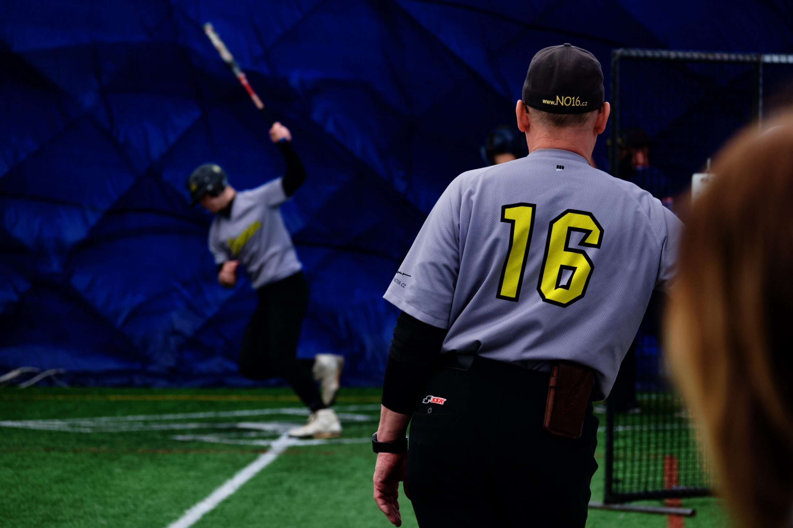

Co je potřeba na trénink?
Klubový dres
Pro všechny hráče platí, že na tréninky i na zápasy budou chodit v dresech. Zakládáme si na tom, že podporujeme hrdost na klubovou příslušnost.
Součástí dresu jsou:
Sportovní obuv
Pro žáky stačí tenisky, ale lepší jsou boty s členitou podrážkou – kopačky (spajky). Kadeti mají kopačky nebo spajky povinné. V našich soutěžích jsou zakázané kovové špunty!
Helmy
Kadeti musí mít helmy vlastní, žáci mohou využívat klubové, i když i pro ně jsou vlastní helmy doporučené. Obličejové masky, pokud jsou potřeba, budou k zapůjčení klubové.
Suspenzory
Pro všechny kluky bez výjimky povinné.